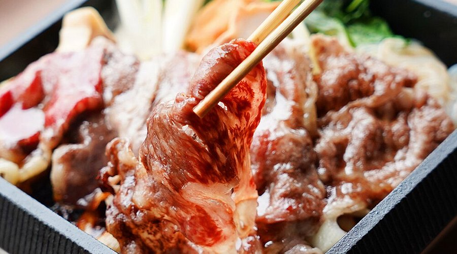
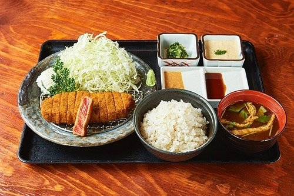

Sukiyaki Hokuto GEMS Namba is a restaurant in Osaka specializing in sukiyaki, a Japanese hot pot dish made with a sweet and soy broth and thin slices of meat. Located on the 7th floor of GEMS Namba, it is known for its high-quality A4 and A5 grade wagyu beef at an affordable price. The restaurant features a stylish interior, counter seats with city views, and is highly praised for its delicious food and helpful staff, making it a popular choice for both locals and tourists.
GYOZAOH! Dotonbori Store is a popular gyoza restaurant located in the heart of Osaka’s lively Dotonbori district, just a short walk from Namba Station. Known for its freshly made pan-fried, steamed, and deep-fried dumplings filled with tender domestic pork and sweet cabbage, the restaurant also offers vegetarian and vegan options, making it friendly for a wide range of diners. With its cozy, casual atmosphere and friendly staff who often assist visitors in English, GYOZAOH! is a great spot for tourists and locals alike to enjoy authentic Japanese comfort food.

Gyukatsu Motomura in Namba is a popular steakhouse famous for its gyukatsu (deep-fried beef cutlet) set meals, which allow diners to grill the rare-cooked meat on a personal stone grill to their desired doneness. The restaurant is known for its high-quality, tender beef at a good value, often with options like a single, 1.5, or double cutlet, and comes with sides like rice, cabbage salad, and sauces.
